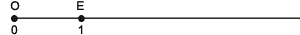
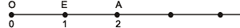
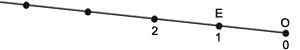

Числовой луч
Луч, который используется для изображения чисел, называется числовым лучом. Началу луча (точке О) соответствует число 0. Отметим на луче какую-нибудь точку Е и поставим ей в соответствие число 1.
Полученный отрезок ОЕ называется единичным отрезком.

Отложим от точки Е вправо отрезок ЕА, равный отрезку ОЕ. Точке А будет соответствовать число 2.

Таким образом на луче можно изобразить любое натуральное число.
Изображение числового луча в виде горизонтального луча с направлением вправо - это условность и традиция. Можно взять луч, расположенный произвольно, и откладывать на нем числа по описанному выше алгоритму.

Сравнение чисел
Про любые два различных числа всегда можно сказать, какое из них больше, а какое меньше. Результат сравнения записывается с помощью знаков < или >:
запись 2 < 5 обозначает, что 2 меньше 5;
запись 5 > 2 обозначает, что 5 больше 2.
Сравнение натуральных чисел
Из двух натуральных чисел больше то, у которого больше цифр в записи числа (больше количество разрядов).
Если количество разрядов в числах одинаково, рассматривается старший разряд: больше то число, у которого цифра в старшем разряде больше.
При равенстве цифр в старшем разряде, сравниваются цифры в следующем по порядку меньшем разряде.
И так далее. Если цифры во всех разрядах совпадают, то числа равны.
Наглядное представление о числах и сравнении их друг с другом дает изображение чисел на числовом луче. Чем число больше, тем правее (дальше от начала луча) оно будет находиться на нашем луче. И наоборот, чем число правее на луче, тем оно больше.
Сравнение десятичных дробей
Из двух десятичных дробей больше та, у которой больше целая часть.
Если целые части одинаковы, рассматривается разряд десятых. Больше та дробь, у которой десятых больше.
Если десятых поровну, сравнивается следующий десятичный разряд.
И так далее.
Если цифры во всех разрядах совпадают, десятичные дроби равны.
|
Пример: 39,481 = 39,481 = 39,4810.
|
Понятия "больше" и "меньше" позволяют упорядочить числа в порядке возрастания или убывания. Одно из основных свойств упорядоченности состоит в следующем: если первое число меньше второго, а второе меньше третьего, то первое число меньше третьего.
Кратко это можно записать так: если а < b и b < с, то а < с.
|